Product Overview
Nylon Tarpaulins are premium-grade protective sheets widely
used for covering, waterproofing, and shielding materials
and equipment from environmental exposure.
Manufactured using strong nylon fabric with protective
coatings, these tarpaulins offer excellent tear resistance,
flexibility, and long service life in demanding conditions.
Key Features
- High tear and tensile strength
- Waterproof and weather resistant
- Durable and long-lasting construction
- Flexible and easy to handle
- Suitable for heavy-duty outdoor use
Specifications
- Material: Nylon Fabric with Coating
- Thickness: Varies as per GSM
- Colour: Blue, Green, Black (varies)
- Waterproof: Yes
- Usage: Indoor and outdoor protection
Applications & Use Cases
- Construction site covering
- Industrial and warehouse protection
- Transport and goods covering
- Agricultural and outdoor use
- Temporary shelters and enclosures
Best Suited For
- Heavy-duty transport and long-distance truck covering
- Sites exposed to strong wind, sun, and repeated handling
- Applications requiring higher tear resistance than HDPE
Selection Note
For Indian conditions, nylon tarpaulins are recommended
where frequent tying, folding, and abrasion are expected.
Selecting appropriate GSM and reinforced edges significantly
improves service life in highway and construction use.
Commonly Used Along With
- Heavy-Duty Ropes or Lashing Belts
- Tarpaulin Eyelets and Reinforced Hooks
- Ground or Floor Protection Sheets
Product FAQs
-
How is nylon tarpaulin different from HDPE tarpaulin?
Nylon tarpaulins offer higher tear resistance, flexibility, and
durability compared to HDPE, making them suitable for heavy-duty
and repeated-use applications.
-
Is nylon tarpaulin suitable for long-distance truck transport?
Yes. Nylon tarpaulins are commonly used for highway and long-distance
transport due to their strength and resistance to tearing from wind
and tying stress.
-
Which GSM should be selected for construction sites?
Higher GSM nylon tarpaulins are recommended for construction sites
where abrasion, dragging, and continuous exposure are expected.
-
Can nylon tarpaulins be used during Indian monsoon?
Yes. Nylon tarpaulins are waterproof and perform well during monsoon,
provided they are properly secured with ropes or lashing belts.
-
Do nylon tarpaulins require reinforced edges?
Reinforced edges and strong eyelets are highly recommended to prevent
tearing during frequent tying and heavy wind conditions.
-
Are custom sizes available for bulk buyers?
Yes. Nylon tarpaulins can be supplied in custom sizes, GSMs, and
edge reinforcements for bulk and project-based requirements.
 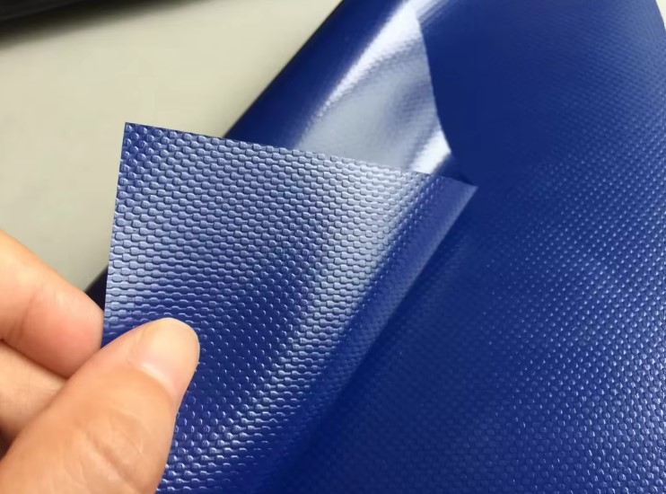
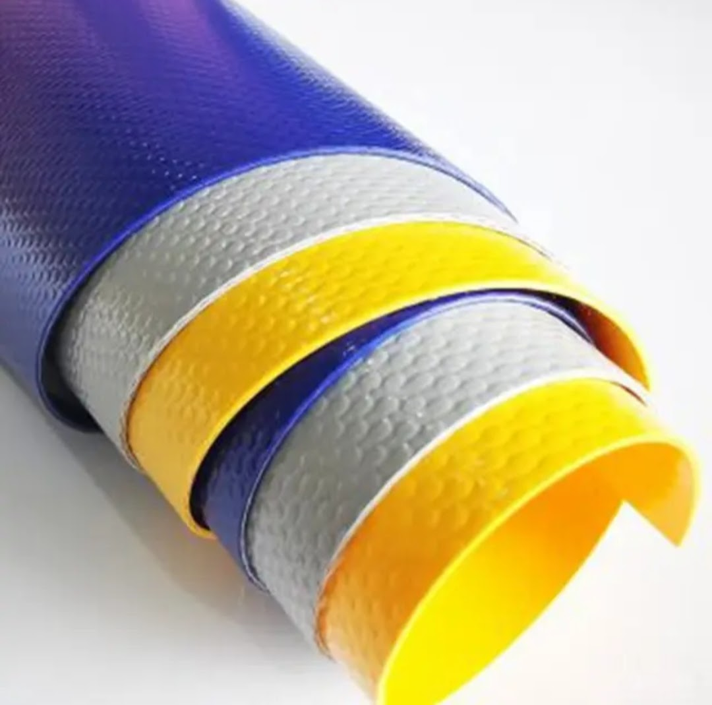
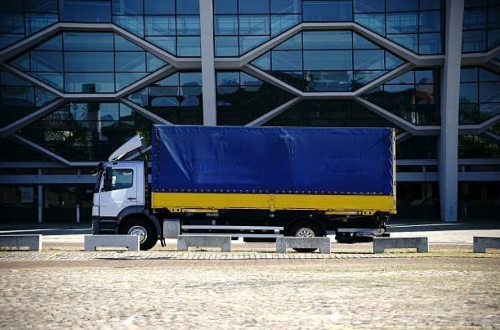
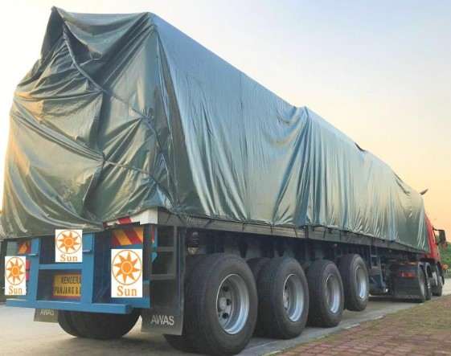
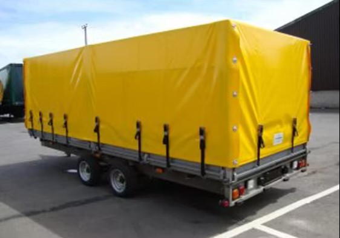
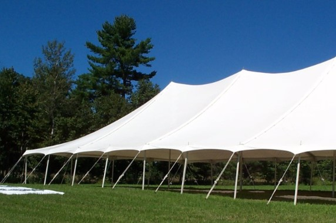
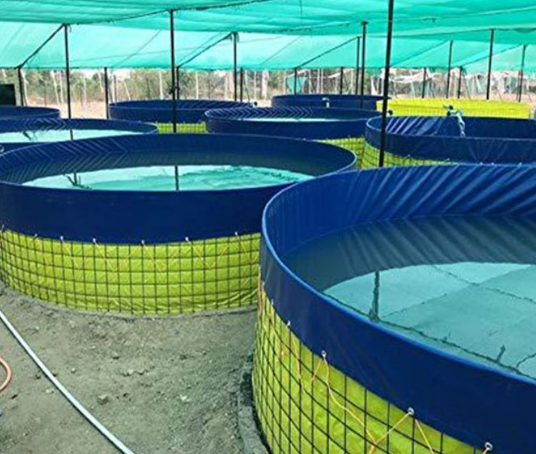
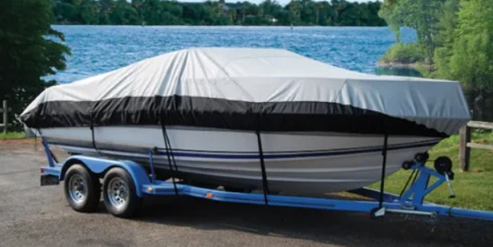
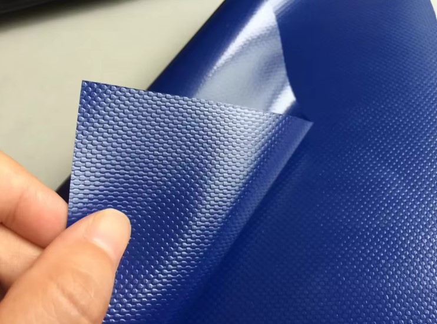
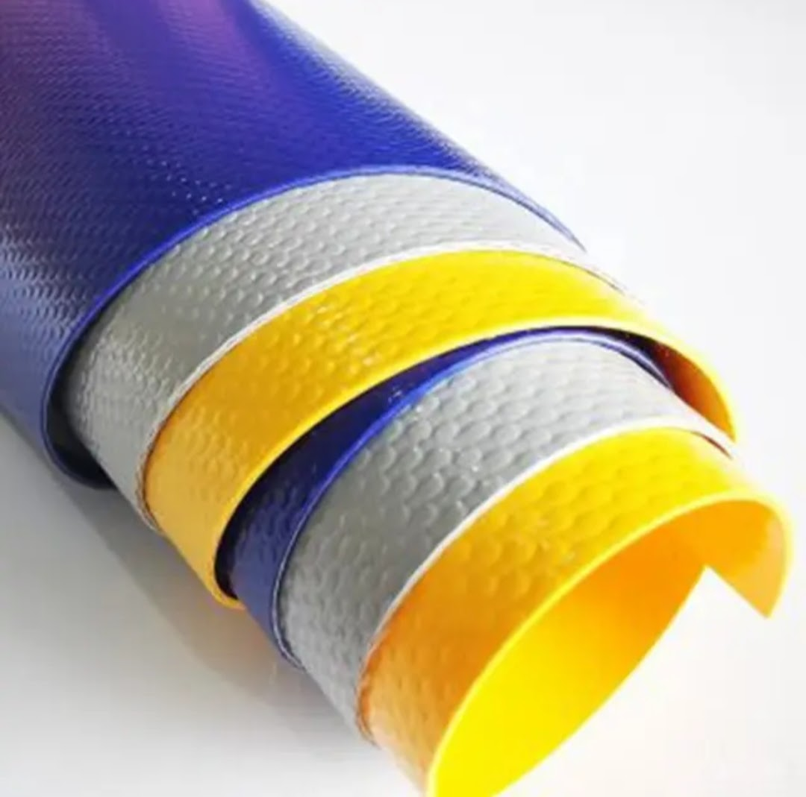
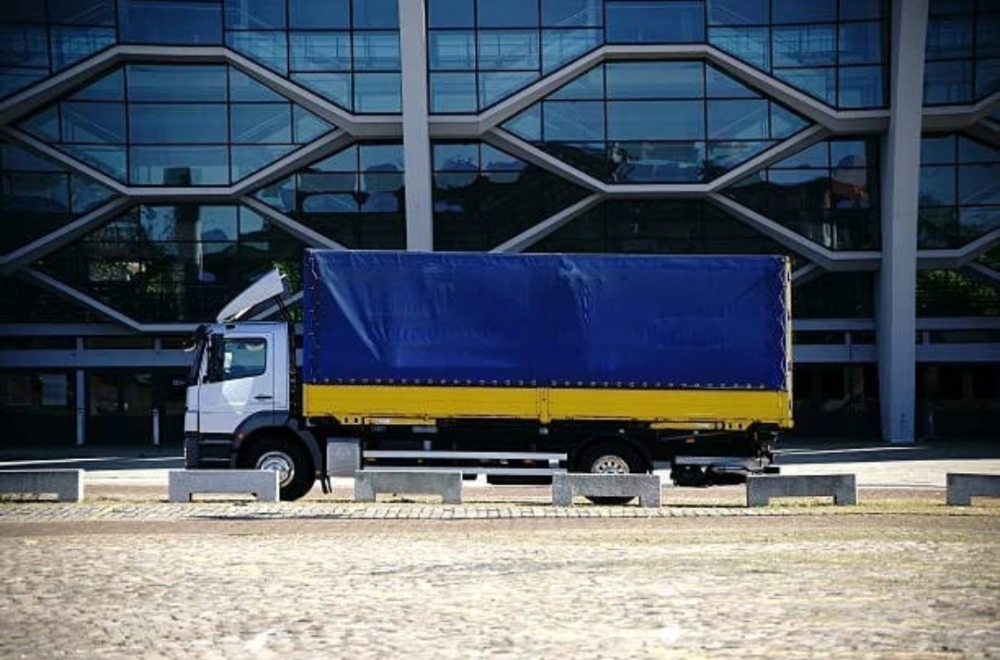
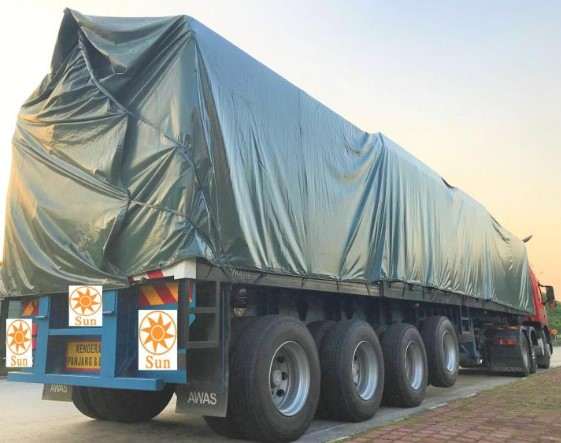
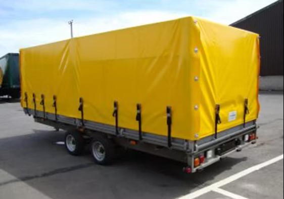
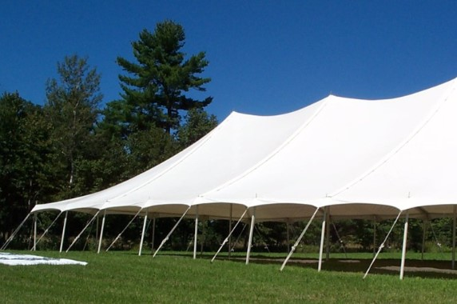
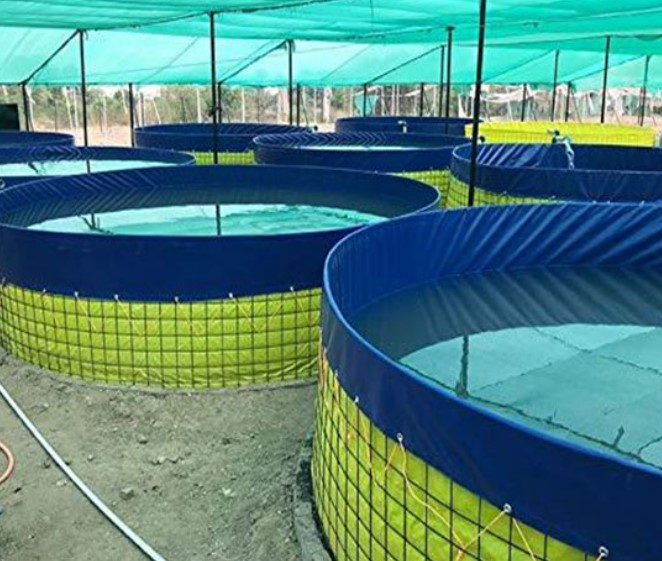
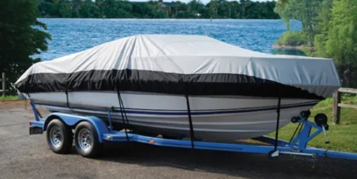